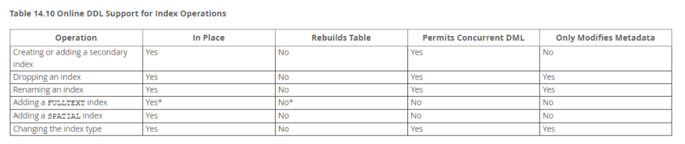
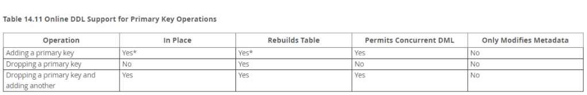
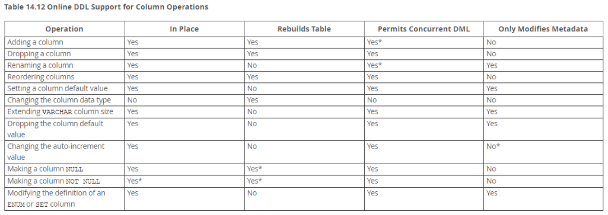
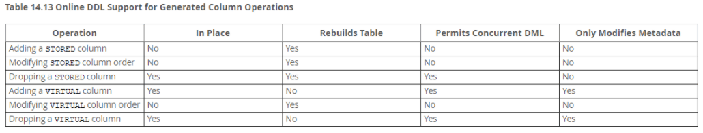
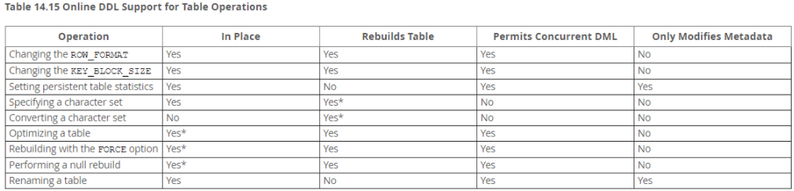

Career: 数据库设计规范
- TAGS: Career
规范目的：
- 达成共识，形成统一的标准，大家在此标准上沟通协作
- 提高效率，提高沟通效率，避免沟通南辕北辙
设计规范
表设计规范：
- 必须使用INNODB存储引擎
- 解读：支持事务、行级锁、并发性能更好、支持崩溃恢复、CPU及内存缓存页优化使得资源利用率更高
- 必须使用UTF8(UTF8MB3)、UTF8MB4字符集
- 解读：通用字符集，俗称：万国码，避免乱码
- 必须使用注释，不限于：库、表、字段
- 解读：团结协作、梳理E-R关系、梳理数据资产必备
- 表必须包括主键、创建时间、修改时间
- 解读：聚簇索引性能更优，迁移、维护，更方便
- 同一业务列，必须使用相同的列名、列定义
- 解读：团结协作、梳理E-R关系、梳理数据资产必备
- 禁止使用存储过程、函数、触发器、事件、视图、外键、UDF
- 解读：不便于迁移、维护，DB负载更高，不便于版本迭代
- 禁止使用非标字段，例如TEXT、BLOB、ENUM、大VARCHAR等
- 解读：内存碎片多、IO性能低、维护成本高、RT慢
- 分场景谨慎使用FLOAT、DOUBLE
- 解读：审计、账单相关业务，使用DECIMAL，也可以使用BIGINT
- 禁止跨库查询 解读：业务耦合度更高，维护成本与业务耦合度成线性增长
- 禁止业务高峰期进行大表DML、DDL 解读：业务低峰期、分批操作、无锁变更
- 必须使用NOT NULL，且有DEFAULT 解读：NULL的缺点，不言而喻
- 单表列数小于30，最多不超过50
- 解读：便于维护，避免产生热点，业务耦合度低
- 单实例表数量小于500张
- 解读：便于维护，避免由于单表操作引起的雪崩、连锁效应
- 表中有逻辑状态标识字段 解读：避免物理删除带来的数据丢失
- UPDATE、DELETE必须使用WHERE条件，且不能永真，如1=1
- 解读：避免产生大量磁盘碎片，误删除
- 单表超过10G，年增长数据大于500W，表行数2000W，可考虑分表，归档
- 解读：避免表过大影响性能
- 表索引个数不超过8个 解读：索引加快了查询速度，但也增加了写入IO负载
- 表组合索引列数最多不超过5个
- 解读：过多的索引列，起不到过滤数据效果，可能会适得其反
- 组合索引的原则要记住 解读：最左前缀，且选择度高的
- 禁止在区分度不高的列上创建索引 解读：会导致全表扫描
- INSERT必须指定列名 解读：增加、删除字段，后端程序出现BUG
- 错误：INSERT INTO t_xxx VALUES(x,x)
- 正确：INSERT INTO t_xxx(col_1,col_2) VALUES(x,x)
- 禁止变更、更新主键
- 解读：相关连的数据、索引都要重组，成本特别高，更易产生碎片
- 禁止使用保留关键字 解读：避免出现冲突，造成程序ERROR
- 禁止存储图片、文件等大数据 解读：可采用OSS，图数据库等更优
- 禁止使用分区表 解读：分区表的操作成本、维护成本都很高
- 同一表的ALTER操作，需合并成一个DDL
- 解读：调用一次API，效率更高，锁表时间更短
- ONLINE-DDL 明细图





27.1 online ddl的关键字
ALGORITHM=INPLACE,LOCK=NONE
例如：
命名规范：
- 强制 库名、表名、字段名采用26个英文字母和0-9这十个数字,加上下划线'_'组成,不能出现其他字符
- 解读：便于维护，统一命名
- 强制 库名、表名、字段名禁止超过32个字符
- 建议 库名以xx_为前缀，后跟业务系统名称，如: xx_wallet
- 强制 库名、表名、字段名禁止使用MySQL保留字
- 建议 表名以t_为前缀，业务模块、功能标识、描述为组合，如t_wallet_transaction_detail
- 强制 数据对象、变量的命名都采用英文字符,禁止使用中文汉字命名
- 强制 临时库、表(中转数据)名必须以tmp为前缀，并以日期为后缀. 如tmp_tablename_20220326
- 强制 备份库名、表名以日期与bak组合为后缀，如tablename_20210910_bak
- 强制 分区表名称，采用表名、自然数序列为组合，例如: t_wallet_transaction_1，最大不超过512张
- 强制 表字符集默认采用utf8mb4，存储引擎采用innodb
- 强制 DB 中事务的隔离级别默认为READ-COMMITED(RC)
数据类型
- 强制 采用自增列id(auto_increment)为主键，采用bigint unsigned非负数设置
- 强制 使用tinyint或采用位运算替换enum，set等类型使用
- 建议 使用tinytint或者smallint类型存储 选择性低的status、type等类型字段
- 建议 使用int unsigned类型存储IP地址字段
- 建议 表中所有字段必须都是NOT NULL属性，必须定义DEFAULT值，可用0或者空字符('')来代替null
- 强制 存储财务、金额等精确浮点数必须使用 DECIMAL 替代 FLOAT 和 DOUBLE
- 强制 使用 UNSIGNED 存储非负整数
- 建议 慎用大字段(BLOB/TEXT等)，使用率低的情况，建议将其拆分至单独的表
- 建议 varchar(N)，N代表字符数，尽量小,最大长度65535个字节,进行排序和创建临时表一类的内存操作时,会使用N的长度申请内存
- 建议 时间，年：year，日期：date，时间：建议timestamp
- 强制 建表时字段必须附带comment信息，要求描述尽量详细，清晰明了
索引
- 强制 InnoDB类型表必须要有主键列，且主键必须是单列字段，使用有序递增的整数值做主键，表的主键列值禁止被更新，可以进行删除
- 操作，比如 id bigint(20) unsigned NOT NULL AUTO_INCREMENT
- 强制 每张表除主键外，必须存在唯一索引
- 强制 避免创建包含多个字段的联合主键，请使用唯一索引代替
- 建议 多列构造的组合索引时，依据列数据的散列度高低，进行排列组合
- 建议 数据散列度低的列，禁止建立单独索引
权限
- 强制 业务账号不允许拥有root权限
- 建议 业务账号与库保持独立对应，一库，两账号方式(读写账号、只读账号)
- 强制 账号后缀标识读写权限，例如 xx_wallet_rw， xx_wallet_r
- 强制 业务只读账号只授权对应库的 SELECT权限
- 强制 读写账号只授权DML权限（SELECT, INSERT, UPDATE, DELETE）
- 强制 DBA账号可以授权root权限，但是只能由DBA和运维使用
- 强制 数据库复制、归档、备份、大数据等账号，不按业务区分，采用统一账号密码
- 强制 root账号只允许本服务器登录
SQL规范
书写规范
- 强制 统计和复杂查询不可使用线上库，各业务线有专用库，如：用户库，商家库，脚本库，统计库，测试库等，具体请看配置文件规范
- 或咨询DBA
- 强制 业务中大表全表扫描和全表导出（dump）请放在备份库或者交由DBA执行
- 强制 禁止使用load data等批量导入的操作，请修改为小批量(推荐不超过1000条/次)insert,每次间隔1s
- 强制 程序端禁止显示使用set语句，包括set names、set sql_mode和set isolation_level等，框架默认启动方式单独讨论
- 强制 禁止使用存储过程、触发器、UDF、events、视图，业务逻辑处理均在程序端完成
- 强制 禁止不同类型字段做比较，避免隐式转换
- 强制 禁止单条SQL语句同时更新多个表
- 强制 Insert语句必须显示的指定字段名
查询规范
- 强制 尽量避免使用select *，请用字段名称代替,如：select user,password from users,替代select * from users
- 强制 线上sql禁止写成多层子查询嵌套的SQL语句，推荐改写成表顺序连接的格式
- 强制 禁止线上sql做逻辑运算，数据逻辑运算需在程序进行
- 建议 查询结果不得超过2000行，如超过会被强制截断
- 强制 禁止使用order by rand()
- 建议 建议使用union all替换union
- 建议 线上尽量避免使用count的操作，推荐使用缓存代替，也可新建总量表或程序端计算
条件查询规范
- 建议 SELECT|UPDATE|DELETE|REPLACE要有WHERE子句，且WHERE子句的条件必需使用索引查找，where条件中如包含两个以上的范围查询（>,<,in,between）只有一个可用到索引
- 建议 in和or，推荐使用in，性能更高，使用in时，包含的值应尽可能少，建议不超过100个
- 强制 WHERE 子句中禁止只使用全模糊的LIKE条件进行查找，必须有其他查询条件
- 强制 WHERE子句中的索引列或组合索引前导列上不能使用函数
- 建议 有distinct、order by和group by子句的查询，需添加索引，如无非常消耗系统资源，排序分组等中间结果集应限制在2000行以内，超过限制应在程序端实现。避免使用limit m，n的方式来进行分页，效率十分低下，请使用合理的方式进行分页查询
其他
- 禁止索引列上使用函数表达式
- 解读：SELECT uid FROM t_user WHERE from_unixtime(day)>='2017-02-15' 会导致全表扫描
- 正确：SELECT uid FROM t_user WHERE day>= unix_timestamp('2017-02-15 00:00:00')
- 禁止使用order by rand() 解读：会导致全表扫描，资源使用率变高
- 禁止隐式转换 解读：SELECT uid FROM t_account WHERE phone=13812345678
- 正确：SELECT uid FROM t_account WHERE phone='13812345678'
- 禁止%开头的模糊查询 解读：会导致全表扫描，资源使用率变高
- 禁止反向查询，包括：NOT、!=、<>、!<、!>、NOT IN、NOT LIKE
- 解读：会导致全表扫描，资源使用率变高
- 禁止使用OR，可用union all改写
- 解读：会产生全表扫描，即使命中索引，CPU消耗也很高
- 禁止大表使用JOIN查询，禁止大表使用子查询
- 解读：会产生临时表，消耗较多内存与CPU
- 用union all而不是union 解读：会导致排序
写入规范
- 强制 禁止在INSERT|UPDATE|DELETE|REPLACE语句中进行多表连接操作，例如：insert …select from xxx,update xxx where xx in (select xxx)等
- 强制 insert必须指明字段名，不可insert into table values(A,B,C),应为：insert into table (a,b,c) values(A,B,C)
- 强制 insert，update，delete建议批量操作，但操作行数不可超过1000条，delete推荐不超过100，执行过程中sleep 1s
- 解读：避免单个事务过大，资源使用率变高
- 强制 禁用update|delete t1 … where a=XX limit XX; 这种带limit的更新语句。因为会导致主从不一致，导致数据错乱，建议加上order by PK
- 强制 禁用insert into …on duplicate key update…在高并发环境下，会造成主从不一致
- 强制 禁止使用create table xx as select * from xxx，容易引发主从复制中断
读写分离
读写规范
- 强制 禁止往从库写数据，所有从库会设置成read_only=on
- 强制 对于同步延迟不敏感的只读查询，必须放到从库上执行，对于同步延迟敏感的只读查询，可放到主库上执行，理论上主库读写比例不得超过2:1
数据库代理规范
使用规范
- 建议 只支持SELECT|UPDATE|DELETE|REPLACE|INSERT等命令，除此之外所有命令都不支持
- 建议 支持事务，暂不能支持读写分离(主库承担读写)
- 强制 执行结果超过1G的SQL自动断开(mysql allowed_packet 参数配置限制)
- 建议 代理对分表支持有特殊要求，具体请看，代理分表规范，并进行测试后再上线使用
- 建议 推荐打开 SQL 语句的PREPARES=true 功能，设置为false的话，不支持读写分离（原因同事务）
- 建议 连接代理的SQL如没有limit，会默认加上limit 2000
- 强制 需两次以上（包括两次）跟myslq交互的命令不能支持，例如：show warnnings，select last_insert_id select sleep select get_lock，select release_lock ,select connection_id等
- 建议 只允许程序连接，禁止一切客户端连接操作
强制 考虑大数据系统分析，业务建表须包含两个时间字段，且字段名称请保持一致：
`update_time` TIMESTAMP DEFAULT CURRENT_TIMESTAMP ON UPDATE CURRENT_TIMESTAMP COMMENT '更新时间' `create_time` timestamp NOT NULL default CURRENT_TIMESTAMP COMMENT '创建时间
强制 对业务数据采用软删除策略
'is_del`tinyint(1) unsigned NOT NULL DEFAULT '0' COMMENT '是否删除 0 正常 1 已删除'